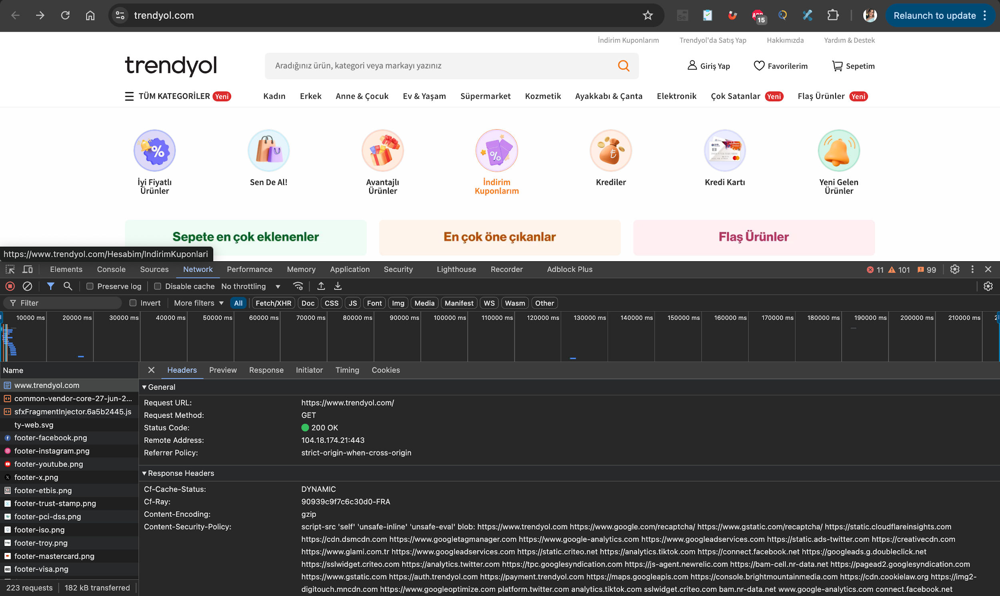

Görev 01
Ana Sayfa İsteği
Trendyol ana sayfası yüklenirken yakalanan temel GET isteği.
İstek Özeti
Analiz Notu
Sunucu ulaşılabilirliği ve temel response header alanları gözlemlendi.
Görsel Kanıt

Görev 01
Trendyol ana sayfası yüklenirken yakalanan temel GET isteği.
Sunucu ulaşılabilirliği ve temel response header alanları gözlemlendi.
